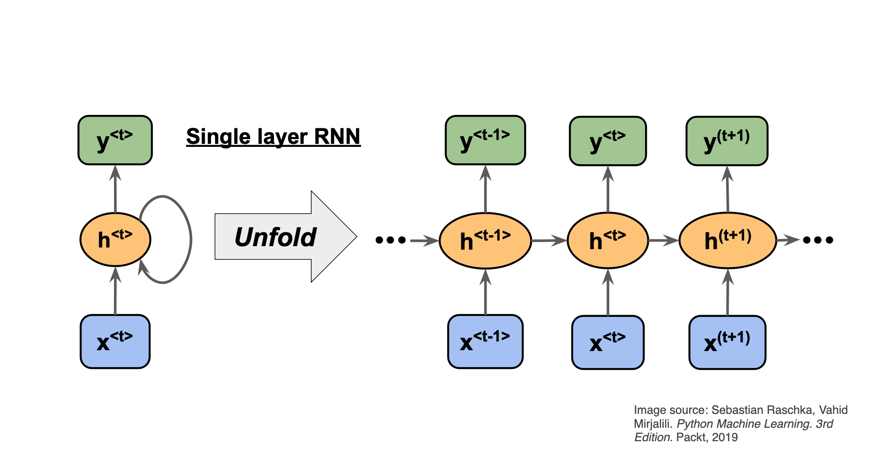

Recurrent neural networks (RNNs) have in general no probabilistic component in a model. With a given fixed input and target from data, the RNNs learn the intermediate association between various layers. The inputs, outputs, and internal representation (hidden states) are all real-valued vectors.
In a traditional NN, it is assumed that every input is independent of each other. But with sequential data, the input at a given stage \( t \) depends on the input from the previous stage \( t-1 \)
To gain some intuition on how we can use RNNs for time series, let us tailor the representation of the solution of a differential equation as a time series.
Consider the famous differential equation (Newton's equation of motion for damped harmonic oscillations, scaled in terms of dimensionless time)
$$ \frac{d^2x}{dt^2}+\eta\frac{dx}{dt}+x(t)=F(t), $$where \( \eta \) is a constant used in scaling time into a dimensionless variable and \( F(t) \) is an external force acting on the system. The constant \( \eta \) is a so-called damping.
In solving the above second-order equation, it is common to rewrite it in terms of two coupled first-order equations with the velocity
$$ v(t)=\frac{dx}{dt}, $$and the acceleration
$$ \frac{dv}{dt}=F(t)-\eta v(t)-x(t). $$With the initial conditions \( v_0=v(t_0) \) and \( x_0=x(t_0) \) defined, we can integrate these equations and find their respective solutions.
Let us focus on the velocity only. Discretizing and using the simplest possible approximation for the derivative, we have Euler's forward method for the updated velocity at a time step \( i+1 \) given by
$$ v_{i+1}=v_i+\Delta t \frac{dv}{dt}_{\vert_{v=v_i}}=v_i+\Delta t\left(F_i-\eta v_i-x_i\right). $$Defining a function
$$ h_i(x_i,v_i,F_i)=v_i+\Delta t\left(F_i-\eta v_i-x_i\right), $$we have
$$ v_{i+1}=h_i(x_i,v_i,F_i). $$The equation
$$ v_{i+1}=h_i(x_i,v_i,F_i). $$can be used to train a feed-forward neural network with inputs \( v_i \) and outputs \( v_{i+1} \) at a time \( t_i \). But we can think of this also as a recurrent neural network with inputs \( v_i \), \( x_i \) and \( F_i \) at each time step \( t_i \), and producing an output \( v_{i+1} \).
Noting that
$$ v_{i}=v_{i-1}+\Delta t\left(F_{i-1}-\eta v_{i-1}-x_{i-1}\right)=h_{i-1}. $$we have
$$ v_{i}=h_{i-1}(x_{i-1},v_{i-1},F_{i-1}), $$and we can rewrite
$$ v_{i+1}=h_i(x_i,h_{i-1},F_i). $$We can thus set up a recurring series which depends on the inputs \( x_i \) and \( F_i \) and the previous values \( h_{i-1} \). We assume now that the inputs at each step (or time \( t_i \)) is given by \( x_i \) only and we denote the outputs for \( \tilde{y}_i \) instead of \( v_{i_1} \), we have then the compact equation for our outputs at each step \( t_i \)
$$ y_{i}=h_i(x_i,h_{i-1}). $$We can think of this as an element in a recurrent network where our network (our model) produces an output \( y_i \) which is then compared with a target value through a given cost/loss function that we optimize. The target values at a given step \( t_i \) could be the results of a measurement or simply the analytical results of a differential equation.



We can think of the recurrent net as a layered, feed-forward net with shared weights and then train the feed-forward net with weight constraints.
We can also think of this training algorithm in the time domain:
The forward pass determines the slope of the linear function used for backpropagating through each neuron
RNNs have difficulty dealing with long-range dependencies.
The expression for the simplest Recurrent network resembles that of a regular feed-forward neural network, but now with the concept of temporal dependencies
$$ \begin{align*} \mathbf{a}^{(t)} & = U * \mathbf{x}^{(t)} + W * \mathbf{h}^{(t-1)} + \mathbf{b}, \notag \\ \mathbf{h}^{(t)} &= \sigma_h(\mathbf{a}^{(t)}), \notag\\ \mathbf{y}^{(t)} &= V * \mathbf{h}^{(t)} + \mathbf{c}, \notag\\ \mathbf{\hat{y}}^{(t)} &= \sigma_y(\mathbf{y}^{(t)}). \end{align*} $$


To derive the expression of the gradients of \( \mathcal{L} \) for the RNN, we need to start recursively from the nodes closer to the output layer in the temporal unrolling scheme - such as \( \mathbf{y} \) and \( \mathbf{h} \) at final time \( t = \tau \),
$$ \begin{align*} (\nabla_{ \mathbf{y}^{(t)}} \mathcal{L})_{i} &= \frac{\partial \mathcal{L}}{\partial L^{(t)}}\frac{\partial L^{(t)}}{\partial y_{i}^{(t)}}, \notag\\ \nabla_{\mathbf{h}^{(\tau)}} \mathcal{L} &= \mathbf{V}^\mathsf{T}\nabla_{ \mathbf{y}^{(\tau)}} \mathcal{L}. \end{align*} $$For the following hidden nodes, we have to iterate through time, so by the chain rule,
$$ \begin{align*} \nabla_{\mathbf{h}^{(t)}} \mathcal{L} &= \left(\frac{\partial\mathbf{h}^{(t+1)}}{\partial\mathbf{h}^{(t)}}\right)^\mathsf{T}\nabla_{\mathbf{h}^{(t+1)}}\mathcal{L} + \left(\frac{\partial\mathbf{y}^{(t)}}{\partial\mathbf{h}^{(t)}}\right)^\mathsf{T}\nabla_{ \mathbf{y}^{(t)}} \mathcal{L}. \end{align*} $$Similarly, the gradients of \( \mathcal{L} \) with respect to the weights and biases follow,
$$ \begin{align*} \nabla_{\mathbf{c}} \mathcal{L} &=\sum_{t}\left(\frac{\partial \mathbf{y}^{(t)}}{\partial \mathbf{c}}\right)^\mathsf{T} \nabla_{\mathbf{y}^{(t)}} \mathcal{L} \notag\\ \nabla_{\mathbf{b}} \mathcal{L} &=\sum_{t}\left(\frac{\partial \mathbf{h}^{(t)}}{\partial \mathbf{b}}\right)^\mathsf{T} \nabla_{\mathbf{h}^{(t)}} \mathcal{L} \notag\\ \nabla_{\mathbf{V}} \mathcal{L} &=\sum_{t}\sum_{i}\left(\frac{\partial \mathcal{L}}{\partial y_i^{(t)} }\right)\nabla_{\mathbf{V}^{(t)}}y_i^{(t)} \notag\\ \nabla_{\mathbf{W}} \mathcal{L} &=\sum_{t}\sum_{i}\left(\frac{\partial \mathcal{L}}{\partial h_i^{(t)}}\right)\nabla_{\mathbf{w}^{(t)}} h_i^{(t)} \notag\\ \nabla_{\mathbf{U}} \mathcal{L} &=\sum_{t}\sum_{i}\left(\frac{\partial \mathcal{L}}{\partial h_i^{(t)}}\right)\nabla_{\mathbf{U}^{(t)}}h_i^{(t)}. \label{eq:rnn_gradients3} \end{align*} $$Recurrent neural networks (RNNs) have in general no probabilistic component in a model. With a given fixed input and target from data, the RNNs learn the intermediate association between various layers. The inputs, outputs, and internal representation (hidden states) are all real-valued vectors.
In a traditional NN, it is assumed that every input is independent of each other. But with sequential data, the input at a given stage \( t \) depends on the input from the previous stage \( t-1 \)
The function \( g \) can any of the standard activation functions, that is a Sigmoid, a Softmax, a ReLU and other. The parameters are trained through the so-called back-propagation through time (BPTT) algorithm.
Besides a simple recurrent neural network layer, as discussed above, there are two other commonly used types of recurrent neural network layers: Long Short Term Memory (LSTM) and Gated Recurrent Unit (GRU). For a short introduction to these layers see https://medium.com/mindboard/lstm-vs-gru-experimental-comparison-955820c21e8b and https://medium.com/mindboard/lstm-vs-gru-experimental-comparison-955820c21e8b.
LSTM uses a memory cell for modeling long-range dependencies and avoid vanishing gradient problems. Capable of modeling longer term dependencies by having memory cells and gates that controls the information flow along with the memory cells.
To preserve information for a long time in the activities of an RNN, we use a circuit that implements an analog memory cell.
The LSTM is a unit cell that is made of three gates:
It also introduces a cell state \( c \), which can be thought of as the long-term memory, and a hidden state \( h \) which can be thought of as the short-term memory.

The first stage is called the forget gate, where we combine the input at (say, time \( t \)), and the hidden cell state input at \( t-1 \), passing it through the Sigmoid activation function and then performing an element-wise multiplication, denoted by \( \otimes \).
It follows
$$ \mathbf{f}^{(t)} = \sigma(W_f\mathbf{x}^{(t)} + U_f\mathbf{h}^{(t-1)} + \mathbf{b}_f) $$where \( W \) and \( U \) are the weights respectively.
This is called the forget gate since the Sigmoid activation function's outputs are very close to \( 0 \) if the argument for the function is very negative, and \( 1 \) if the argument is very positive. Hence we can control the amount of information we want to take from the long-term memory.
The next stage is the input gate, which consists of both a Sigmoid function (\( \sigma_i \)), which decide what percentage of the input will be stored in the long-term memory, and the \( \tanh_i \) function, which decide what is the full memory that can be stored in the long term memory. When these results are calculated and multiplied together, it is added to the cell state or stored in the long-term memory, denoted as \( \oplus \).
We have
$$ \mathbf{i}^{(t)} = \sigma_g(W_i\mathbf{x}^{(t)} + U_i\mathbf{h}^{(t-1)} + \mathbf{b}_i), $$and
$$ \mathbf{\tilde{c}}^{(t)} = \tanh(W_c\mathbf{x}^{(t)} + U_c\mathbf{h}^{(t-1)} + \mathbf{b}_c), $$again the \( W \) and \( U \) are the weights.
The forget gate and the input gate together also update the cell state with the following equation,
$$ \mathbf{c}^{(t)} = \mathbf{f}^{(t)} \otimes \mathbf{c}^{(t-1)} + \mathbf{i}^{(t)} \otimes \mathbf{\tilde{c}}^{(t)}, $$where \( f^{(t)} \) and \( i^{(t)} \) are the outputs of the forget gate and the input gate, respectively.
The final stage of the LSTM is the output gate, and its purpose is to update the short-term memory. To achieve this, we take the newly generated long-term memory and process it through a hyperbolic tangent (\( \tanh \)) function creating a potential new short-term memory. We then multiply this potential memory by the output of the Sigmoid function (\( \sigma_o \)). This multiplication generates the final output as well as the input for the next hidden cell (\( h^{\langle t \rangle} \)) within the LSTM cell.
We have
$$ \begin{aligned} \mathbf{o}^{(t)} &= \sigma_g(W_o\mathbf{x}^{(t)} + U_o\mathbf{h}^{(t-1)} + \mathbf{b}_o), \\ \mathbf{h}^{(t)} &= \mathbf{o}^{(t)} \otimes \sigma_h(\mathbf{c}^{(t)}). \\ \end{aligned} $$where \( \mathbf{W_o,U_o} \) are the weights of the output gate and \( \mathbf{b_o} \) is the bias of the output gate.
The dynamics of a stable spiral evolve in such a way that the system's trajectory converges to a fixed point while spiraling inward. These oscillations around the fixed point are gradually dampened until the system reaches a steady state at a fixed point. Suppose we have a two-dimensional system of coupled differential equations of the form
$$ \begin{align*} \frac{dx}{dt} &= ax + by \notag,\\ \frac{dy}{dt} &= cx + dy. \end{align*} $$The choice of \( a,b,c,d \in \mathbb{R} \) completely determines the behavior of the solution, and for some of these values, albeit not all, the system is said to be a stable spiral. This condition is satisfied when the eigenvalues of the matrix formed by the coefficients are complex conjugates with a negative real part.
A Lorenz attractor presents some added complexity. It exhbits what is called a chaotic behavior and its behavior is extremely sensitive to initial conditions.
The expression for the Lorenz attractor evolution consists of a set of three coupled nonlinear differential equations given by
$$ \begin{align*} \frac{dx}{dt} &= \sigma (y-x), \notag\\ \frac{dy}{dt} &= x(\rho -z) - y, \notag\\ \frac{dz}{dt} &= xy- \beta z. \end{align*} $$For this problem, \( {x,y,z} \) are the variables that determine the state of the system in the space while \( \sigma, \rho \) and \( \beta \) are, similarly to the constants \( a,b,c,d \) of the stable spiral, parameters that influence largely how the system evolves.
Both of the above-mentioned systems are governed by differential equations, and as such, they can be solved numerically through some integration scheme such as forward-Euler or fourth-order Runge-Kutta.
We use the common choice of parameters \( \sigma =10 \), \( \rho =28 \), \( \beta =8/3 \). This choice generates complex and aesthetic trajectories that have been extensively investigated and benchmarked in the literature of numerical simulations.
For the stable spiral, we employ \( a = 0.2 \), \( b = -1.0 \), \( c = 1.0 \), \( d = 0.2 \). This gives a good number of oscillations before reaching a steady state.
Training and testing procedures in recurrent neural networks follow what is usual for regular FNNs, but some special consideration needs to be taken into account due to the sequential character of the data. Training and testing batches must not be randomly shuffled for it would clearly decorrelate the time-series points and leak future information into present or past points of the model.
The training algorithm can become computationally costly, especially if the losses are evaluated for all previous time steps. While other architectures such as that of LSTMs can be used to mitigate that, it is also possible to introduce another hyperparameter responsible for controlling how much of the network will be unfolded in the training process, adjusting how much the network will remember from previous points in time . Similarly, the number of steps the network predicts in the future per iteration greatly influences the assessment of the loss function. .
The training and testing batches were separated into whole trajectories. This means that instead of training and testing on different fractions of the same trajectory, all trajectories that were tested had completely new initial conditions. In this sense, from a total of 10 initial conditions (independent trajectories), 9 were used for training and 1 for testing. Each trajectory consisted of 800 points in each space coordinate.
The problem we have is a time-series forecasting problem, so, we are free to choose the loss function amongst the big collection of regression losses. Using the mean-squared error of the predicted versus factual trajectories of the dynamic systems is a natural choice.
It is a convex function, so given sufficient time and appropriate learning rates, it is guaranteed to converge to global minima irrespective of the weightss random initializations.
$$ \begin{align} \mathcal{L}_{MSE} = \frac{1}{N}\sum_{i}^N (y(\mathbf{x}_i) - \hat{y}(\mathbf{x}_i, \mathbf{\theta}))^2 \label{_auto1} \end{align} $$where \( \mathbf{\theta} \) represents the set of all parameters of the network, and \( \mathbf{x}_i \) are the input values
A cost/loss function that is based on the observational and predicted data, is normally referred to as a purely data-driven approach.
While this is a well-established way of assessing regressions, it does not make use of other intuitions we might have over the problem we are trying to solve. At the same time, it is a well-established fact that neural network models are data-greedy - they need large amounts of data to be able to generalize predictions outside the training set. One way to try to mitigate this is by using physics-informed neural networks (PINNs) when possible.
Trying to improve the performance of our model beyond training sets, PINNs then add physics-informed penalties to the loss function. In essence, this means that we add a worse evaluation score to predictions that do not respect physical laws we think our real data should obey. This procedure often has the advantage of trimming the parameter space without adding bias to the model if the constraints imposed are correct, but the choice of the physical laws can be a delicate one.
A general way of expressing this added penalty to the loss function is shown here
$$ \begin{align*} \mathcal{L} = w_{MSE}\mathcal{L}_{MSE} + w_{PI}\mathcal{L}_{PI}. \end{align*} $$Here, the weights \( w_{MSE} \) and \( w_{PI} \) explicitly mediate how much influence the specific parts of the total loss function should contribute. See the above project link for more details.